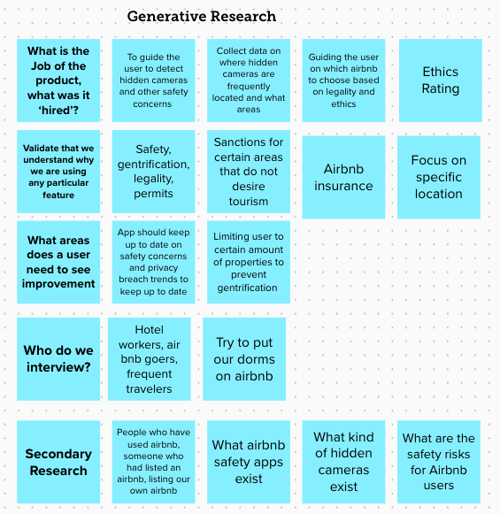
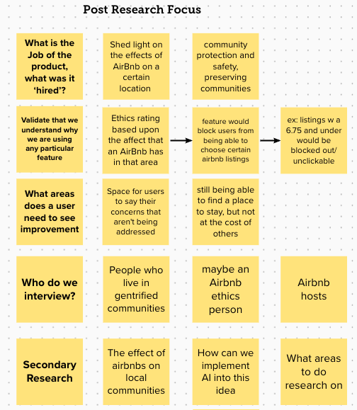
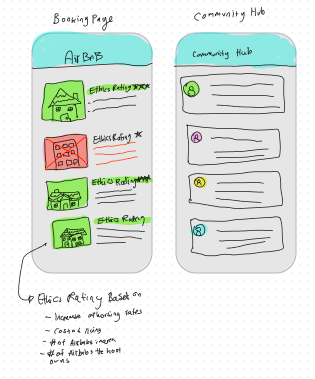
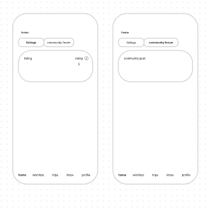

EarthCnc
Figma App Prototype
Project Overview
Airbnb is an online hostel which allows individuals to rent out their properties to others for a certain amount of time. Unfortunately Airbnb is a contributor to many over arching issues such as gentrifying neighborhoods and driving out local communities with Airbnbs. This is largely due to the lack of regulations that Airbnb has. Earthcnc is an ethical extension to Airbnb that determines how ethical an Airbnb is and gives each listing a rating based upon an Ethical Index. This extension also includes a community forum that allows the renters to see what is happening in the community and the community to address their concerns relating Airbnbs in the area.

App Mockup
Design Process
My design process began with my how might we question: How might we create a product that allows the user to ensure their community's safety (from gentrification). In order to understand what areas the app would need to cover, I began with some generative research to understand who exactly the user base would be and what job would the product do. The initial goal of the app was to aid Airbnb customers in locating hidden cameras that may be in their Airbnb. As I continued to do more research I discovered that there were larger issues associated with Airbnb. This lead me to re-evaluate my focus post research.

Design Thinking Process
Next I decided on what pages the app would need. I took inspiration from the existing Airbnb app and decided to add a community hub. The purpose of the community hub is to give residents of the neighborhoods where Airbnbs reside a chance to voice their concerns and allow those who are staying in Airbnbs interact with the community. In addition the user would be able to see an Ethical Rating associated with each listing.

Low Fidelity Prototypes
Ethical Index
The Ethical index is a scale that gives an AirBnb listing an ethical rating that is based upon racial, housing price, and median income changes between 2010 and 2020 in that area and the number of properties owned by the AirBnb poster. This ethical rating determines how gentrified a certain area is and how an AirBnb affects that area. The listing will receive a score of 0-4 based upon these 4 criteria with the potential to earn up to 4 points for each criteria. These 4 criteria include: change in race demographics, change in the median income and change in the price of housing.
Final Prototype
The final prototype was created in Figma with a logo design that was created in Adobe Illustrator. The app is meant to be an extension that connects your existing Airbnb account to EarthCnc. This allows the user to see the impact a particular listing has on the neighborhood it resides in. When the user is ready to book a listing, they are then re-directed back to Airbnb to complete their payment.